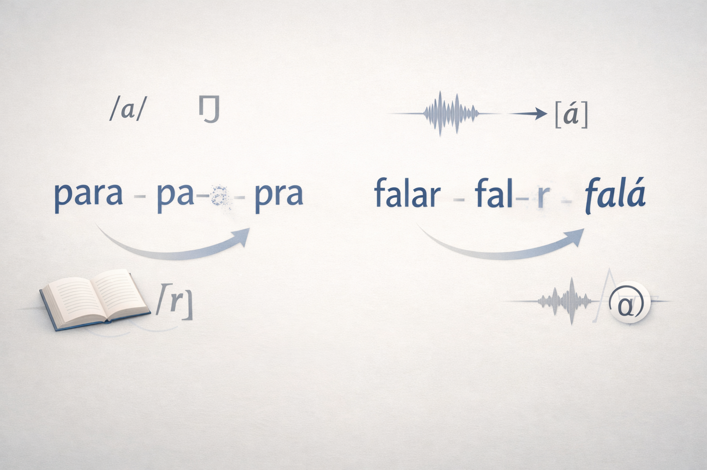

Processo de Elisão (ou Supressão) de Segmentos Fonológicos na Língua Portuguesa
No funcionamento real das línguas naturais, a fala espontânea não se comporta como uma leitura robótica e linear de caracteres ortográficos. Longe de constituir um bloco estático de sons imutáveis, a cadeia fônica do português brasileiro é regida por um princípio universal da comunicação humana: a lei da economia articulatória ou do menor esforço (MARTINET, 1955). Sob a pressão da velocidade elocutiva, da cadência rítmica e da densidade informacional, os falantes mobilizam sistematicamente o processo de elisão fonológica — também denominado na literatura técnica como supressão ou apagamento de segmentos.
Esse fenômeno consiste na não realização fonética de determinados fonemas (sejam eles vocálicos ou consonantais) em contextos sintagmáticos e prosódicos específicos. Ocorrências consagradas na oralidade de todas as classes sociais — tais como a redução da preposição para em pra, a contração de está em tá, a supressão do arquifonema /R/ nos infinitivos verbais (cantar → [kɐ̃.ˈta]) e o apagamento do /S/ pós-vocálico em finais de coda — não representam "defeitos", "erros" ou "desleixo de pronúncia". Trata-se de regras variáveis fonologicamente motivadas, dotadas de regularidade descritiva e amplamente mapeadas pela sociolinguística variacionista contemporânea.
Neste estudo aprofundado, examinaremos o estatuto fonológico da elisão (aférese, síncope e apócope), a distinção entre elisão interna e elisão de fronteira vocabular (sinalefa), a correlação entre frequência lexical e automatização cognitiva (Modelo Baseado no Uso), os fatores sociolinguísticos condicionadores do apagamento e o imperativo pedagógico do combate ao preconceito linguístico alinhado às diretrizes da Base Nacional Comum Curricular (BNCC).

A fundamentação teórica: Metaplasmos de Supressão e Fonologia de Uso
Historicamente, a gramática diacrônica sempre reconheceu que as línguas evoluem pela transformação e queda de sons. Os chamados metaplasmos de supressão dividem-se conforme a posição do segmento na palavra:
- Aférese: supressão de segmento no início do vocábulo (ex.: latim attonitu → português tonto; na fala atual: está → tá, você → cê);
- Síncope: supressão de segmento no meio do vocábulo (ex.: latim oculu → óclo → olho; na fala atual: para → pra, xícara → xicra);
- Apócope: supressão de segmento no final do vocábulo (ex.: latim mare → português mar; na fala atual: falar → [fa.ˈla], depois → [de.ˈpoj]).
A perspectiva funcional de Mattoso Câmara Jr. e Joan Bybee
Para Joaquim Mattoso Câmara Jr. (1970, p. 58), a oralidade não pode ser avaliada com a régua da ortografia: “A língua oral manifesta uma tendência constante à simplificação articulatória, eliminando ou enfraquecendo fonemas em posições menos salientes. Esses processos não representam falhas do sistema, mas mecanismos estruturais de adaptação funcional da linguagem às condições reais de uso”.
Complementarmente, a linguista cognitivista Joan Bybee (2001), em sua Fonologia Baseada no Uso, demonstra que palavras de altíssima frequência de ocorrência no discurso (como pronomes, preposições e verbos auxiliares) são armazenadas de forma automatizada na memória muscular e neural, sofrendo reduções fonéticas mais velozes do que itens lexicais raros.
Tipologia das elisões no Português Brasileiro
Na dinâmica sincrônica do português falado no Brasil, a elisão incide sistematicamente sobre dois grandes eixos segmentais:
Elisão Vocálica (Apepazamento de Núcleos)
Incide predominantemente sobre vogais médias átonas pretônicas ou postônicas e em encontros de fronteira entre palavras (fonologia de frase).
Exemplos intraverbais: espera aí → peraí; você → cê.
Exemplos interverbais (Sinalefa): fusão de vogais adjacentes na fronteira: "de água" → [ˈda.gwɐ]; "minha alma" → [mi.ˈɲaw.mɐ].
Elisão Consonantal (Apagamento em Coda)
Incide quase que exclusivamente sobre consoantes que ocupam a posição de coda silábica, que é a posição de menor energia e maior instabilidade do português.
Apagamento do /R/ final: falar → [fa.ˈla]; amor → [a.ˈmo].
Apagamento do /S/ final: nós fomos → nós fomo; dois reais → dois real.
Desnasalização da desinência: falaram → [fa.ˈla.ɾu].
O apagamento categórico do /R/ nos infinitivos verbais
O cancelamento do fonema vibrante /R/ na coda dos verbos no infinitivo (amar, vender, partir) é um dos fenômenos mais produtivos e generalizados do português brasileiro. Estudos sociolinguísticos capitaneados por Leda Bisol (2005) e por pesquisadores do Projeto NURC (Norma Urbana Culta) revelam que esse apagamento atinge índices superiores a 80% a 90% na fala espontânea, ocorrendo inclusive em enunciados de profissionais com nível superior completo, palestrantes e jornalistas.
Por que a perda do /R/ não destrói a compreensão da frase?
A fonologia estrutural explica que a inteligibilidade não é afetada porque a marca morfológica de infinitivo é sustentada de forma redundante por outros elementos da frase:
1. Contexto sintático auxiliar: quando dizemos "eu vou cantar", o verbo auxiliar vou já sinaliza a perífrase modal que exige o infinitivo subsequente;
2. Tonicidade final preservada: ao pronunciar "vou cantá", a sílaba final permanece estritamente oxítona ([kɐ̃.ˈta]), diferenciando-se com nitidez de formas paroxítonas como canta ([ˈkɐ̃.tɐ]);
3. Economia comunicativa: a língua preserva o núcleo tônico da mensagem e descarta a consoante final que demanda maior esforço de atrito mecânico.
| Processo Fonológico | Forma Ortográfica Padrão | Realização na Fala Espontânea | Transcrição Fonética (IPA) | Motivação Estrutural / Frequência |
|---|---|---|---|---|
| Aférese vocálica/silábica | está | "tá" | [ˈta] | Alta frequência do verbo auxiliar; redução de sílaba pretônica. |
| Síncope consonantal e vocálica | para | "pra" | [pɾɐ] | Gramaticalização de preposição átona; fusão com o ataque. |
| Apócope do /R/ infinitivo | fazer | "fazê" | [fa.ˈze] | Debilidade acústica da consoante em coda; tonicidade oxítona mantida. |
| Aférese pronominal | você | "cê" | [se] | Desgaste histórico de fórmula de tratamento (Vossa Mercê → Você → Cê). |
| Sinalefa (elisão intervocabular) | de esperança | "d'esperança" | [dis.pe.ˈɾɐ̃.sɐ] | Evitação de hiato em fronteira prosódica; fusão de vogais átonas. |
| Apócope do /S/ em plural | nós | "nó" / "a gente" | [ˈnɔ] | Redundância de marcação morfológica no sintagma nominal. |
Elisão e Variação Sociolinguística: os aportes de William Labov
A sociolinguística variacionista fundada por William Labov (2008) estabelece que a variação linguística não é caótica nem aleatória. A supressão de segmentos fonológicos opera segundo regras variáveis ordenadas, condicionadas por feixes de variáveis linguísticas e extralinguísticas:
- Monitoramento estilístico: em situações formais de alta vigilância comunicativa (audiências jurídicas, conferências públicas, entrevistas formais), a taxa de elisão do /R/ e do /S/ diminui sensivelmente; em rodas de conversa descontraídas e ambientes familiares, a taxa de elisão atinge seu ápice;
- Ambiente fônico subsequente: se a palavra seguinte começar por vogal, o /R/ final tende a ser preservado por um processo de ressilabificação ligada (ex.: "falar alto" → [fa.ˈla.ˈʁaw.tu]); se a palavra seguinte começar por consoante, o apagamento é quase categórico (ex.: "falar baixo" → [fa.ˈla.ˈbaj.ʃu]);
- Escolaridade e faixa etária: a exposição prolongada à cultura escrita atua como uma força centrípeta de retenção da forma conservadora nos contextos formais, enquanto a juventude acelera a adoção de formas reduzidas como marcadores de identidade e fluidez comunicativa.
O enfrentamento do Preconceito Linguístico na sala de aula
Na tradição pedagógica excludente, as marcas de elisão da oralidade foram historicamente tratadas como "erros imperdoáveis", "corrupção da língua" ou sinais de "deficiência cognitiva". Conforme denuncia David Crystal (2011) e no Brasil autores como Marcos Bagno (2007) e Magda Soares (2002), essa atitude expressa um preconceito social mascarado de zelo gramatical.
A escola moderna, respaldada pela Base Nacional Comum Curricular (BNCC), tem o dever de operar a distinção entre:
- Língua falada: sistema vivo, oral, dinâmico, guiado pela expressividade imediata, pelo ritmo e pela adequação contextual;
- Língua escrita formal: código gráfico convencional, fixado politicamente por tratados ortográficos, cuja aprendizagem sistemática deve ser assegurada a todos como ferramenta de acesso à cidadania plena.
O estudante não deve ser ensinado a "falar como se escreve" (o que produziria uma elocução artificial, pedante e robotizada), mas a desenvolver a competência sociolinguística polidialetal: saber utilizar as formas plenas na redação do ENEM, nos documentos oficiais e em discursos formais, reconhecendo a legitimidade das formas reduzidas na espontaneidade dos múltiplos gêneros orais cotidianos.
Análise fonológica na prática: o ciclo de redução sintagmática
Observe a trajetória evolutiva de contrações orais consagradas na fala real:
Caso Clínico: A Trajetória de "Vossa Mercê" a "Cê"
O pronome de tratamento da Língua Portuguesa percorreu um itinerário multissecular de sucessivas elisões fonológicas condicionadas pela altíssima frequência de uso:
- Século XVI: Vossa Mercê (expressão reverencial polissilábica);
- Século XVII/XVIII: Vosmecê / Vossemecê (síncope de segmentos mediais);
- Século XIX/XX: Você (aférese e síncope consolidada na escrita oficial);
- Século XXI (Oralidade contemporânea): Cê (aférese da sílaba átona pretônica [vo-], restando o monossílabo funcional átono [se]).
Conclusão linguística: A forma "cê" não é uma invenção inconsequente da internet ou da juventude de hoje; é o coroamento lógico de uma lei fonológica milenar de desgaste e gramaticalização que moldou a própria história do idioma.
Esquema pedagógico: o itinerário analítico da elisão fonológica
Fluxo de Investigação Fonológico-Variacionista
Enunciado oral sob observação
→ Houve ausência de segmento fonológico presente na ortografia?
• Sim: Processo de Elisão Identificado.
→ Qual é a posição anatômica da supressão?
• Início da palavra: Aférese (ex.: está → tá).
• Meio da palavra: Síncope (ex.: para → pra).
• Fim da palavra: Apócope (ex.: falar → falá).
→ Quais fatores condicionam a escolha?
• Posição na sílaba (geralmente coda de baixa sonoridade).
• Frequência lexical alta (palavras gramaticais e fórmulas de rotina).
• Nível de monitoramento estilístico e adequação sociodiscursiva.
Questões para estudo e fixação
Questão 1 (Classificação Diacrônica dos Metaplasmos)
A redução da palavra "você" para a variante oral cotidiana "cê" exemplifica qual tipo de metaplasmo de supressão fonológica?
A) Síncope.
B) Apócope.
C) Aférese.
D) Epêntese.
Ver resposta comentada
Resposta comentada: Alternativa C. A aférese consiste na supressão de fonemas ou sílabas localizadas no início do vocábulo. Em você → cê, verifica-se o cancelamento da sílaba pretônica inicial vo-.
Questão 2 (Condicionamento do Apagamento do /R/)
Sob a ótica da fonologia descritiva, por que a supressão do /R/ final nos infinitivos verbais (como em "preciso cantar") é muito mais frequente diante de consoantes ("cantar baixo") do que diante de vogais ("cantar alto")?
Ver resposta comentada
Resposta comentada: Porque diante de uma palavra iniciada por vogal ocorre o fenômeno da ressilabificação: a consoante final /R/ migra de sua posição fraca de coda e assume o ataque da sílaba seguinte ([kɐ̃.ˈta.ˈʁaw.tu]), ganhando sustentação acústica. Diante de consoante, essa transição não é possível, mantendo o /R/ na posição enfraquecida de travamento de rima, o que precipita seu cancelamento por economia muscular.
Questão 3 (Teoria da Frequência de Joan Bybee)
De acordo com a linguista Joan Bybee, qual é a razão de palavras funcionais como "para" (que vira "pra") e verbos de ligação como "está" (que vira "tá") sofrerem elisão muito mais rápida do que substantivos raros como "paráfrase" ou "estatuto"?
Ver resposta comentada
Resposta comentada: A frequência de uso lexical. Palavras gramaticais de alta recorrência são processadas de forma holística e ultra-automatizada na cognição do falante e do ouvinte. Devido à sua extrema previsibilidade discursiva, exigem menor esforço perceptivo, tolerando reduções drásticas de material sonoro sem comprometer o sentido da mensagem.
Questão 4 (Distinção entre Língua Falada e Escrita)
Por que é tecnicamente inadequado afirmar que uma pessoa que diz "vamos almoçá" em um almoço de família está "falando errado"?
Ver resposta comentada
Resposta comentada: Porque no domínio da oralidade espontânea e descontraída, a elisão do /R/ em infinitivos verbais é uma regra variável padrão da sociolinguística brasileira, compartilhada por falantes de todos os extratos de escolaridade. O conceito científico adequado é o de adequação contextual: o falante estaria inadequado se escrevesse dessa forma em um documento jurídico ou redação formal, mas na intimidade da fala a forma reduzida é natural, eficiente e legítima.
Questão 5 (Transposição Didática na BNCC)
Como o professor de Língua Portuguesa pode utilizar o estudo dos processos de elisão fonológica para desenvolver habilidades prescritas pela BNCC no Ensino Fundamental e Médio?
Ver resposta comentada
Resposta comentada: O docente pode orientar os estudantes a transcreverem áudios de podcasts e entrevistas informais, mapeando as ocorrências de elisão, síncope e aférese. Em seguida, orienta a retextualização desses trechos para o padrão da norma escrita formal. Essa prática atende diretamente às competências da BNCC voltadas à reflexão sobre a variação linguística, à distinção funcional entre oralidade e escrita e ao combate ético aos preconceitos sociolinguísticos.
Resumo do processo de elisão fonológica
- Elisão fonológica: não realização sistemática de segmentos sonoros (vogais ou consoantes) na fala espontânea;
- Orientada pelo princípio universal da economia articulatória e pela busca de fluidez comunicativa;
- Metaplasmos clássicos: aférese (queda no início: está → tá), síncope (queda no meio: para → pra) e apócope (queda no fim: falar → falá);
- O apagamento do /R/ no infinitivo verbal é quase categórico na fala brasileira, mantendo o núcleo oxítono intacto;
- Itens lexicais de alta frequência (preposições, pronomes, auxiliares) sofrem maior redução (teoria de Joan Bybee);
- A variação obedece a regras probabilísticas estruturais e sociais bem definidas (teoria de William Labov);
- A elisão não é erro linguístico; é um mecanismo de adaptação funcional da oralidade que deve ser compreendido pedagogicamente contra o preconceito linguístico.
Perguntas frequentes sobre elisão fonológica
Qual é a diferença entre elisão, aférese, síncope e apócope?
Elisão (ou supressão) é o termo genérico para o cancelamento de um segmento sonoro. Aférese é a elisão no início da palavra (você → cê). Síncope é a elisão no interior da palavra (para → pra). Apócope é a elisão no final da palavra (cantar → cantá).
A elisão ocorre apenas no português informal?
Não. Determinadas elisões são históricas e cristalizaram-se na própria norma culta escrita oficial (como o latim oculu que deu olho, ou mare que deu mar). Na oralidade culta, a fusão de vogais de fronteira (sinalefa) e o cancelamento do /R/ final são diários e generalizados.
O que é sinalefa?
É a elisão ou fusão de uma vogal átona final com a vogal inicial da palavra seguinte no fluxo contínuo da frase falada (ex.: pronunciar "copo de água" como [ˈkɔ.pu.ˈda.gwɐ]).
Por que as pessoas dizem "pra" em vez de "para"?
Porque para é uma preposição monótona e átona de altíssima frequência. A língua suprime a vogal média pretônica interna (síncope), criando uma forma monossilábica mais ágil e rítmica que exige menor esforço motor.
O apagamento do "S" final em plurais (ex.: "os amigo") é o mesmo processo?
Sim, trata-se de uma apócope do fonema fricativo alveolar /S/ na coda. Sociolinguisticamente, é um traço variável da concordância nominal muito presente em certas variedades populares do português brasileiro.
O que a BNCC orienta sobre a variação linguística e a elisão?
A BNCC prescreve que a escola deve acolher a diversidade linguística oral sem estigmatização, ensinando os estudantes a analisar os fenômenos da fala viva e capacitando-os a dominar os gêneros formais da escrita de acordo com a situação comunicativa.
Em que outros idiomas a elisão ocorre com frequência?
A elisão é universal nas línguas do mundo. No francês é oficial na escrita (l'ami em vez de le ami), no inglês é onipresente em contrações (I'm, don't, gonna) e no espanhol ocorre em dialetos caribenhos e andaluzes.
Como avaliar o uso de contrações orais em redações escolares?
Na redação formal do ENEM e vestibulares, o candidato deve empregar a forma ortográfica canônica por exigência do padrão culto escrito. Contudo, em gêneros literários, crônicas, tirinhas e diálogos teatrais, o uso da elisão é um recurso de expressividade e verossimilhança indispensável.
Considerações finais
O estudo do processo de elisão e supressão de segmentos fonológicos desvela a extraordinária vitalidade da Língua Portuguesa em seu ecossistema natural: a boca e os ouvidos de seus falantes. Longe de ser um edifício de mármore inflexível, a língua é uma tecnologia sociocultural adaptativa que equilibra permanentemente a necessidade de clareza semântica com o imperativo biológico da economia muscular e da agilidade de pensamento.
Ao compreender os mecanismos estruturais que governam fenômenos como "pra", "tá" e "falá", professores, vestibulandos e entusiastas da linguagem superam a miopia do preconceito gramatical. Restabelece-se, assim, uma postura científica, inclusiva e lúcida que sabe valorizar a oralidade espontânea como patrimônio cultural legítimo, ao mesmo tempo em que domina com maestria as exigências protocolares da norma-padrão escrita.
Conteúdos relacionados
- Fonologia: fonemas, sílabas e estrutura sonora da Língua Portuguesa — Índice de Conteúdos
- Fonema e Letra: Uma distinção fundamental na análise linguística
- Tipos de Fonemas: Vogais, Semivogais e Consoantes
- Classificação Fonética Detalhada das Vogais
- Fonologia das Semivogais (Glides / Semiconsoantes)
- Encontros Vocálicos e Consonantais: Quando os sons se encontram
- Hiatos, Ditongos e Tritongos: como identificar e exemplos
- O Som das Palavras: Sílaba, Tonicidade e Prosódia
- Fonologia e Fonética: distinções conceituais
Referências
- BAGNO, Marcos. Preconceito Linguístico: o que é, como se faz. 49. ed. São Paulo: Loyola, 2007.
- BISOL, Leda (org.). Introdução a Estudos de Fonologia do Português Brasileiro. 4. ed. Porto Alegre: EDIPUCRS, 2005.
- BYBEE, Joan. Phonology and Language Use. Cambridge: Cambridge University Press, 2001.
- CAGLIARI, Luiz Carlos. Alfabetização e Linguística. 10. ed. São Paulo: Scipione, 2009.
- CÂMARA JR., Joaquim Mattoso. Estrutura da Língua Portuguesa. 20. ed. Petrópolis: Vozes, 2011.
- CRYSTAL, David. Language and the Internet. 2. ed. Cambridge: Cambridge University Press, 2011.
- LABOV, William. Padrões Sociolinguísticos. Tradução de Marcos Bagno, Maria Marta Pereira Scherre e Caroline Rodrigues Cardoso. São Paulo: Parábola Editorial, 2008.
- MARTINET, André. Économie des changements phonétiques: traité de phonologie diachronique. Berne: A. Francke, 1955.
- SILVA, Thaïs Cristófaro. Fonética e Fonologia do Português: roteiro de estudos e guia de exercícios. 10. ed. São Paulo: Contexto, 2010.
- SOARES, Magda. Letramento: um tema em três gêneros. 2. ed. Belo Horizonte: Autêntica, 2002.
Explore outros conteúdos
Continue seus estudos acessando outras seções do site Mestre Kira: